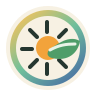

节气室
关于节气观察室
节气观察室的定位、内容边界和长期目标。
节气观察室是一个面向城市生活的二十四节气观察站。我们关心传统节气如何在现代房间、街道、阳台、市场和通勤路线上继续被感知。
本站不做未经核验的养生承诺，也不复制百科条目。每篇文章都以原创观察、可执行记录方法和公开来源说明为基础。

节气室 把二十四节气写回城市日常节气室
节气观察室的定位、内容边界和长期目标。
节气观察室是一个面向城市生活的二十四节气观察站。我们关心传统节气如何在现代房间、街道、阳台、市场和通勤路线上继续被感知。
本站不做未经核验的养生承诺，也不复制百科条目。每篇文章都以原创观察、可执行记录方法和公开来源说明为基础。